마을 정보
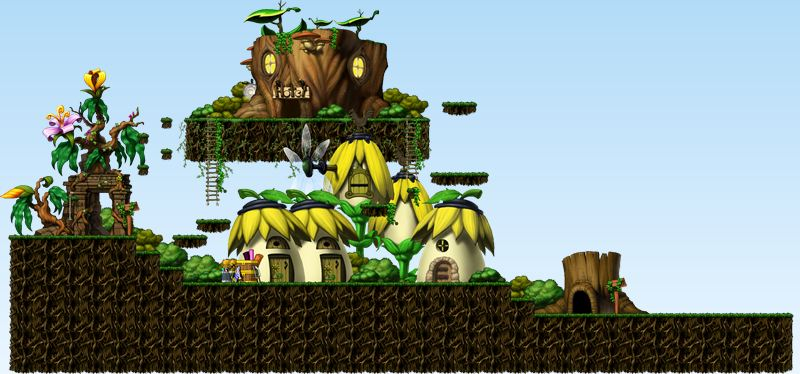
슬리피우드
빅토리아 아일랜드 · 슬리피우드마을NPC 15명근처 사냥터 43곳
마을 NPC 15명
- 크리슈라마
- 기부함
- 달리어
- 요원 E
- 차원의 거울
- 일지
- 루니
- 사비트라마
- 이상한 모양의 석상
- 오서방
- 떠돌이 연금술사
- 기억하고 있는 자
- 마
- 카산드라
- 가가
근처 사냥터 43곳 · 레벨 낮은 순
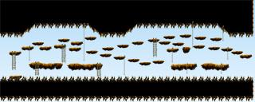
어두운통로Lv.20~24 · 몬스터 3종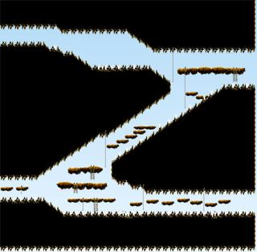
위험한증기Lv.20~24 · 몬스터 3종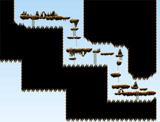
개미굴1Lv.22~24 · 몬스터 3종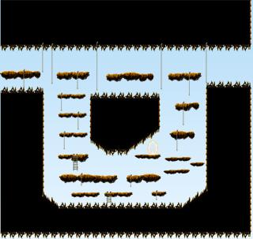
개미굴2Lv.22~24 · 몬스터 3종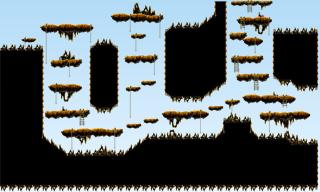
개미굴3Lv.22~24 · 몬스터 3종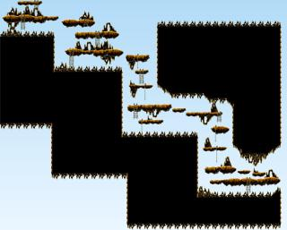
개미굴4Lv.22~24 · 몬스터 3종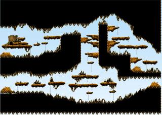
개미굴광장Lv.22~27 · 몬스터 3종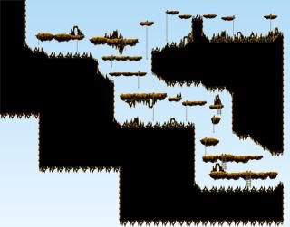
깊은개미굴1Lv.22~27 · 몬스터 3종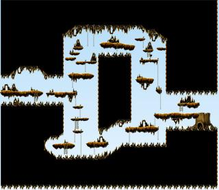
깊은개미굴2Lv.22~27 · 몬스터 3종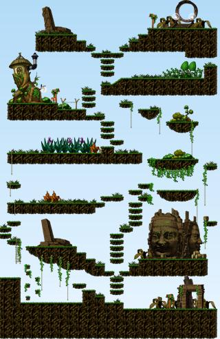
또 다른 문Lv.22~24 · 몬스터 3종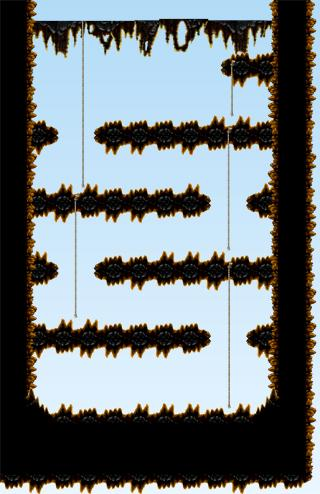
버섯이 자라는 굴Lv.22~24 · 몬스터 2종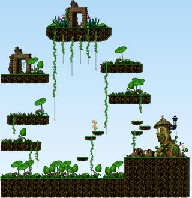
축축한나무숲Lv.22~24 · 몬스터 3종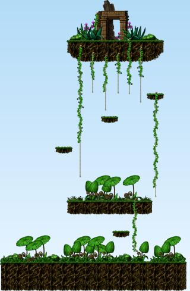
축축한나무숲습지Lv.22~24 · 몬스터 2종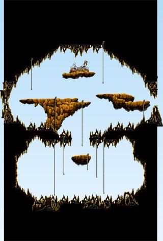
머쉬맘의 무덤Lv.24~65 · 몬스터 2종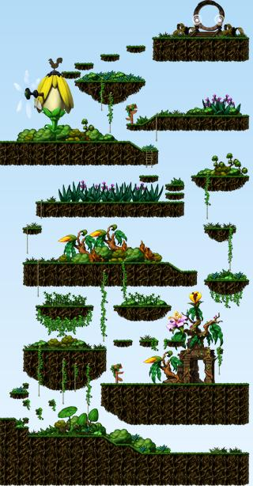
깊은숲 습지Lv.27 · 몬스터 1종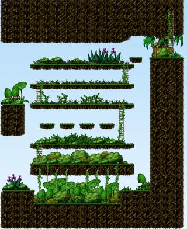
깊은숲사냥터1Lv.27~35 · 몬스터 2종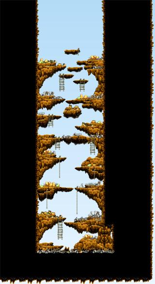
이블아이의굴1Lv.27 · 몬스터 1종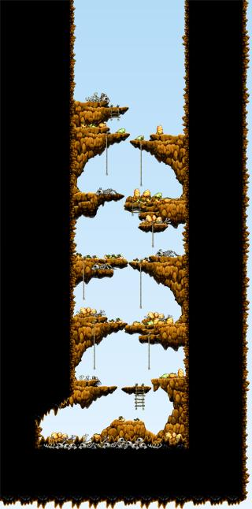
이블아이의굴2Lv.27 · 몬스터 1종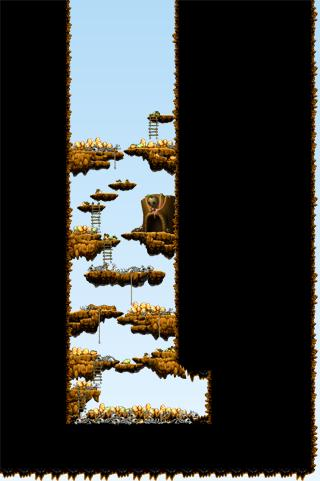
이블아이의굴3Lv.27 · 몬스터 1종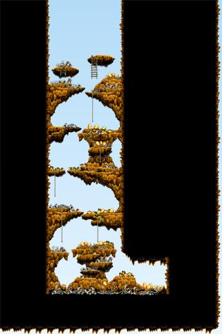
이블아이의굴4Lv.27 · 몬스터 1종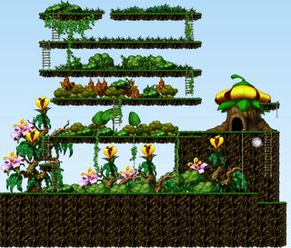
깊은숲사냥터2Lv.35 · 몬스터 1종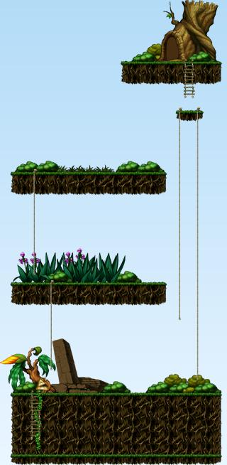
슬리피던전1Lv.37 · 몬스터 1종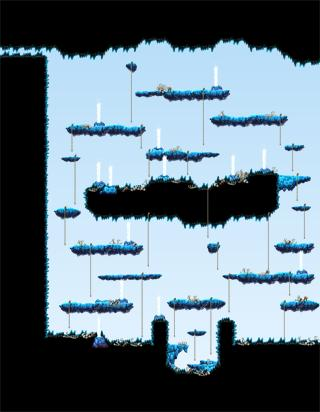
드레이크의 영역Lv.40~64 · 몬스터 3종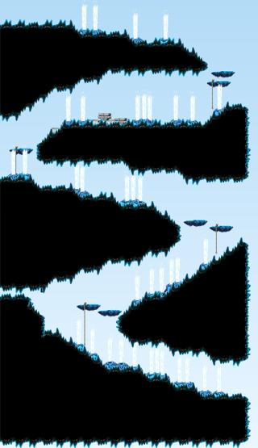
또다른길Lv.40 · 몬스터 1종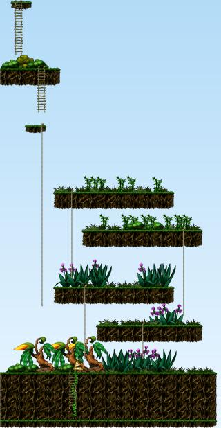
슬리피던전2Lv.40 · 몬스터 1종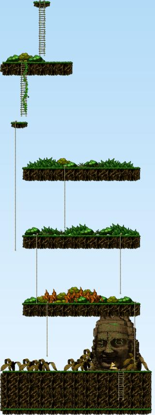
슬리피던전3Lv.40 · 몬스터 1종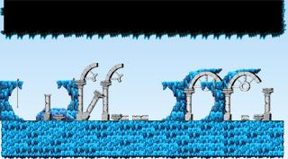
신전의입구1Lv.40~70 · 몬스터 2종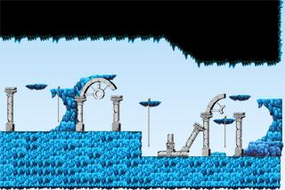
신전의입구2Lv.40~70 · 몬스터 2종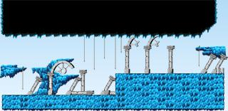
신전의입구3Lv.40~75 · 몬스터 3종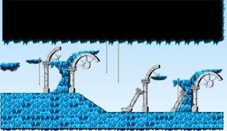
신전의입구4Lv.40~75 · 몬스터 3종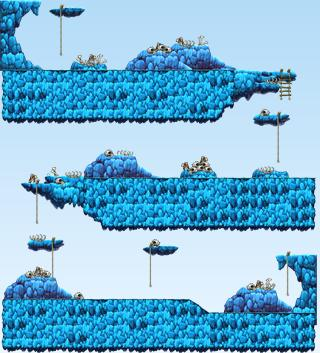
와일드카고의영역Lv.40~62 · 몬스터 2종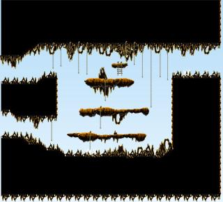
드레이크사냥터Lv.45~50 · 몬스터 2종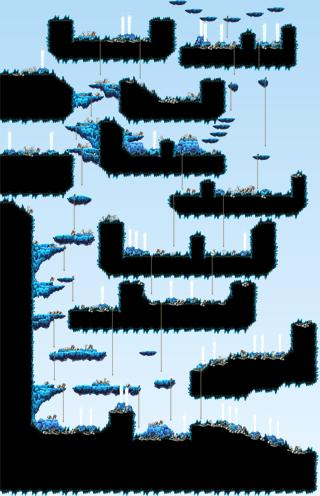
빛을잃은동굴1Lv.45~50 · 몬스터 2종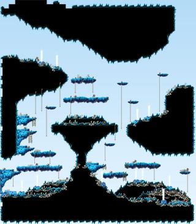
빛을잃은동굴2Lv.50~60 · 몬스터 2종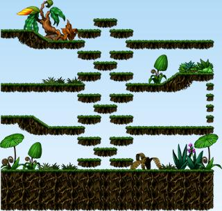
무너진 골렘의 성터Lv.55~59 · 몬스터 2종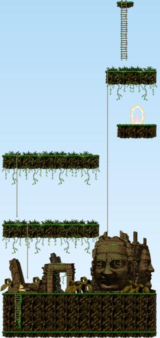
슬리피던전4Lv.55~58 · 몬스터 2종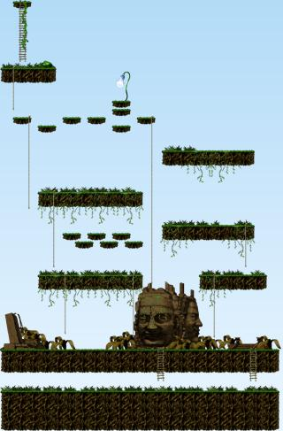
슬리피던전5Lv.55~58 · 몬스터 2종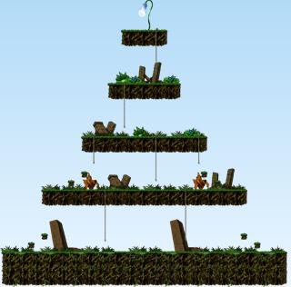
골렘의 숲Lv.58~59 · 몬스터 2종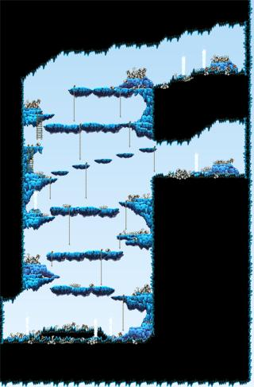
드레이크의밥상Lv.60~62 · 몬스터 2종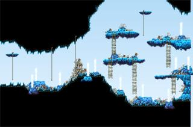
드레이크의 둥지Lv.64~68 · 몬스터 2종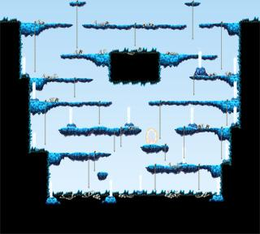
차가운 요람Lv.64~68 · 몬스터 2종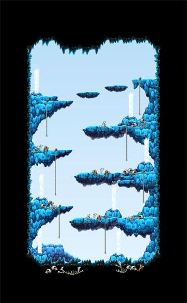
드레이크의 푸른동굴Lv.68 · 몬스터 1종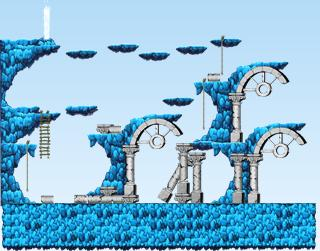
저주받은신전Lv.80 · 몬스터 1종빅토리아 아일랜드의 다른 마을
마을 목록과 이름은 메이플랜드 기준, NPC와 맵 그림은 원본 게임 데이터(GMS 83) 기준이에요. 메이플랜드에서는 다를 수 있어요.